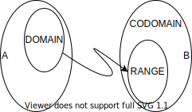

Functional
Functions

- Exactly 1 to 1 mapping from A to B, where the valid inputs are called $\color{red}{domain}$ and the valid outputs $\color{blue}{range}$.
- Often the exact $\color{blue}{range}$ of a function is not known, but one coulde describe a set, which contains the range - the $\color{blue}{codomain}$.
Functional Programming
- based on (Sinclair, 2019)
- An algebraic structure on a set A is a collection of finitary operations on A. The set A together with this algebraic strcuture is called algebra.
- monoid, aplicative, semigroup, lattice, fucntor, monad - these are all allgebraic strucutres.
- Algebraic structures represent templates for solving a problem (like design patterns), and have their basis in mathematics (unlike design patterns). So they tend to be formely defined, and to conform to specific laws.
- Laws do not make algebraic structures more restricitve, but rather give allow making dedcutions and assumptions on how the code works.
- More often the explanaints of an algebraic structure are not about the problem it solves, but about the loaws it conforms to.
- It is not until instances like
Maybe,EitherorEffectare created, that anything useful can be done.
- TypeClasses are used to implement algebraic strucutres. They enable parametric polymorphism, which allow the use of the same function with different types, even when the exact type is not known upfront.
- Algebraic Data Types - it is about the possibilites.
- Product (AND): a class conainting 3 variables (
a,b,c), whereaandbcan have 2 values (e.g. boolean) andccan have 10 values, the calss can hace $2x2x10=40$ possibilities. In reality Product classes may have infinitely many possibilities. - Sum (OR): a class representing a direction with four values
east,west,southandnordcan have only one of these four direction. Hence all possibilities are $1+1+1+1=4$. AnEithercan be onlyLeftorRight, but not both. - Generaly Sum have more limited range of values, and it can be very useful to know the precise number of combination. as it is a way of making assertions about the code with mathematical certainty. Therefore they are useful to model the business domain.
- Product (AND): a class conainting 3 variables (
Categories
Laws
identity law combine(x, empty) = combine(empty, x) = x, example $a + 0 = a = 0 + a$
fa.map(x => x) = fa
composition law u.map(x => g(f(x))) = u.map(f).map(g) = fa.map(f.andThen(g))
associativity combine(combine(a, b), c) = combine(a, combine(b,c)), example: $(a + b) + c = a + (b + c)$
Type constructors and Higher Kinded Types
Types (as per Scala Cats documentation)
Semigrouphas an $\color{green}{associative}$ binary operationcombine. A common example is theIntegersemigroup with the operation+.SemigroupK(K for Kind) allows to define the combine for type constructors. So, for example, whereas you can find aSemigroupfor types which are fully specified likeIntorList[Int]orOption[Int], you will find SemigroupK for type constructors likeListandOption.trait Semigroup[A] { def combine(x: A, y: A): A }
Semigroup[List[Int]].combine(List(1,2,3), List(4,5,6)) ==
SemigroupK[List].combineK[Int](List(1,2,3), List(4,5,6));
// List[Int] = List(1, 2, 3, 4, 5, 6)
MonoidextendsSemigroupand has an empty value conforming to the $\color{green}{identity}$ law for thecombineoperation. Having anemptyallows to write a genericcombineAlloperation. A common examples areIntegerwith0andStringwith"".
trait Monoid[A] extends Semigroup[A] {
def empty: A
}
def combineAll[A](list: List[A], m: Monoid[A]): A = list.foldRight(m.empty)(m.combine)
final case class Pair[A, B](first: A, second: B)
def tuple2Instance[A, B](A: Monoid[A], B: Monoid[B]): Monoid[Pair[A, B]] =
new Monoid[Pair[A, B]] {
def empty: Pair[A, B] = Pair(A.empty, B.empty)
def combine(x: Pair[A, B], y: Pair[A, B]): Pair[A, B] =
Pair(A.combine(x.first, y.first), B.combine(x.second, y.second))
}
}
implicit val intAdditionMonoid: Monoid[Int] = new Monoid[Int] {
def empty: Int = 0
def combine(x: Int, y: Int): Int = x + y
}
def combineAll[A](list: List[A])(implicit A: Monoid[A]): A = list.foldRight(A.empty)(A.combine)
Functora type class that abstract over type constructor that can be mapped over (e.g.List,Option,Future), where it must obeys $\color{green}{identity}$ and $\color{green}{composition}$ laws.
TheFis often reffered as effect or computational context. Different effects will abstract away different behaviors with respect to fundamental functions like map. For instance,Option’s effect abstracts away potentially missing values, where map applies the function only in theSomecase but otherwise threads theNonethrough.trait Functor[F[_]] { def map[A, B](fa: F[A])(f: A => B): F[B] }- Occasionally it is a bit difficult to work with nested data types like
List[Option[A]]. ButFunctors cancompose, which means ifFandGhaveFunctorinstances, then so doesF[G[_]]val listOption = List(Some(1), None, Some(2)) // listOption: List[Option[Int]] = List(Some(1), None, Some(2)) Functor[List].compose[Option].map(listOption)(_ + 1) // res: List[Option[Int]] = List(Some(2), None, Some(3)) - TODO!!!!
ApplicativeaddspureandaptoFunctors.purewraps the value into the type constructor - forOptionthis could beSome(_), forFutureFuture.successful, and forLista singleton list.
If we viewFunctoras the ability to work with a single effect,Applicativeencodes working with multiple independent effects.trait Applicative[F[_]] extends Functor[F] { def ap[A, B](ff: F[A => B])(fa: F[A]): F[B] def pure[A](a: A): F[A] def map[A, B](fa: F[A])(f: A => B): F[B] = ap(pure(f))(fa) } Applyis a weakenedApplicativeproviding only theapoperation. Hence, in Cats,Apply extends Functor {def ap ...}andApplicative extends Apply {def pure ...}.- TODO!!!!
Monad extends Applicative - TODO!!!!
Parallel… In short,Monadsdescribe dependent computations andApplicativesdescribe independent computations.
Instances
- Maybe, Either, Effect, Future, Promise
References
- Sinclair, J. (2019). Things I wish someone had explaind about functional programming. https://jrsinclair.com/articles/2019/algebraic-structures-what-i-wish-someone-had-explained-about-functional-programming/